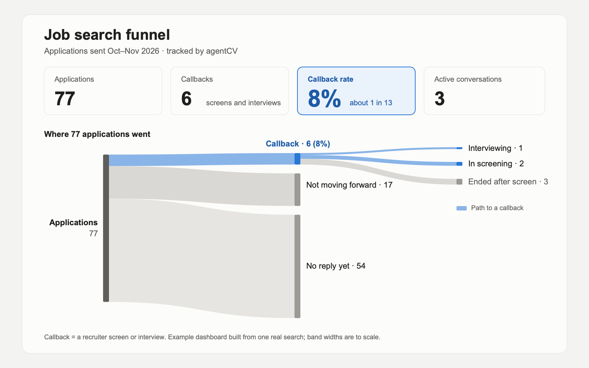

Your own job search agency, run by AI, with you as the only client.
agentCV turns an AI agent into a recruiter who works only for you. It coaches your resume, finds roles, tailors every application, and preps you for interviews. You make every decision, and nothing goes out without your OK.
Get started now with your preferred agent
Recommended
Claude Cowork
The Claude desktop app, working in a folder on your computer. This is the setup agentCV was built and tested on. Needs a paid Claude plan.
Either way, setup takes about ten minutes, plus one to three sessions of coaching with your agent.
Why job seekers use agentCV
Only apply to roles that fit your needs
Tell agentCV what you need: the role and level, your pay floor, location, remote or in-office, and your deal-breakers. It checks every posting against that list before you spend a minute on it, scores the fit from 1 to 5, and tells you honestly when a role is a stretch.
Tailor every resume and stay true to your experience
For each role, agentCV reorders and rewords your real experience in the job description's language, so applicant tracking systems can find you. Every claim comes from your confirmed profile. If a line reaches past what you've told it, agentCV stops and asks you for the facts. Each tailored resume comes with a changelog: before, after, and why.
Ease the application grind with guided sprints
agentCV preps applications in batches. Each one comes with an apply kit: the link, the files to upload, suggested answers to tricky questions, a salary suggestion, and the quirks of that portal. Quick portals go together, and the ones that make you create an account get their own sprint. You still click Submit.
Dive deeper into your industry
Tell agentCV your field, and it researches the companies in it, including smaller and newer ones you might never think to search for. It adds their public job boards to your watchlist so it can check them for new openings.
Win back the time you spend scrolling job sites
Instead of refreshing LinkedIn and Indeed, run a sweep. agentCV scans the job boards on your watchlist and brings back only new roles that match your targets. A few big sites block automated checks, so it keeps a short list for you to check by hand. Then one dashboard shows where everything stands.

Concept view built from one real search: 77 applications, an 8% callback rate.
Ready to meet your agency?
Pick the agent you already use. Setup takes about ten minutes; then your agent coaches you through your profile and resume.
Free and open source (MIT) on GitHub. Nothing goes out without your OK. Your files live in a folder on your computer; the AI service you choose processes what your agent reads, under that service's terms. Who made this?